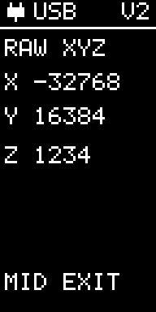

Raw XYZ diagnostics
RAW XYZ shows the signed X, Y and Z counts used by the live acceleration display. Saved low-g calibration applies to these readings. This is a live diagnostic screen, not a stored recording.
Middle: return HOME. For a saved graph, use RECORD and then download it.
